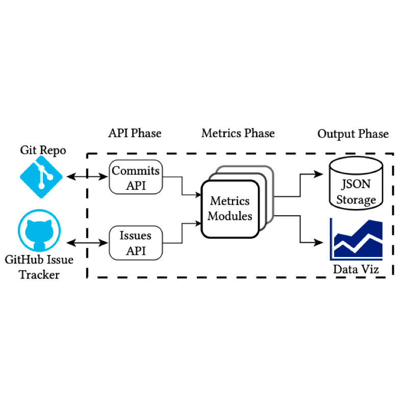

<script type="text/javascript">
function None_start() { document.getElementById("None_before").style.opacity = "1"; }
function None_stop() { document.getElementById("None_before").style.opacity = "0"; }
None_stop()
</script>
<tr onmouseout="None_stop()" onmouseover="None_start()">
<td class="demo">
<div class="one">
<div class="two" id="None">
</div>
</div>

</div>
</td>
<td style="padding:20px;width:75%;vertical-align:middle">
<a href="/"> <span class="title">An Empirical Study of Artifacts and Security Risks in the Pretrained Model Supply Chain</span> </a>
<br>
<a href="https://wenxin-jiang.github.io/"> Wenxin Jiang </a>
Nicholas Synovic
Rohan Sethi
Aryan Indarapu
Matt Hyatt
Taylor R. Schorlemmer
George K.  Thiruvathukal
James C. Davis
<br>
<em>ACM SCORED</em>, 2022
<br>
project page
arxiv
<p>  </p>
</td>
</tr>
<script type="text/javascript">
function prime_start() { document.getElementById("prime_before").style.opacity = "1"; }
function prime_stop() { document.getElementById("prime_before").style.opacity = "0"; }
prime_stop()
</script>
<tr onmouseout="prime_stop()" onmouseover="prime_start()">
<td class="demo">
<div class="one">
<div class="two" id="prime">
</div>
</div>

</div>
</td>
<td style="padding:20px;width:75%;vertical-align:middle">
<a href="/"> <span class="title">Snapshot Metrics Are Not Enough: Analyzing Software Repositories with Longitudinal Metrics</span> </a>
<br>
Nicholas Synovic
Matt Hyatt
Rohan Sethi
Sohini Thota
Shilpika
Allan J. Miller
<a href="https://wenxin-jiang.github.io/"> Wenxin Jiang </a>
Emmanuel S. Amobi
Austin Pinderski
Konstantin Läufer
Nicholas J. Hayward
Neil Klingensmith
James C. Davis
George K. Thiruvathukal
<br>
<em>ASE Tools Demo</em>, 2022
<br>
project page
<a href="https://arxiv.org/abs/2207.11767"> arxiv </a>
<p>  </p>
</td>
</tr>